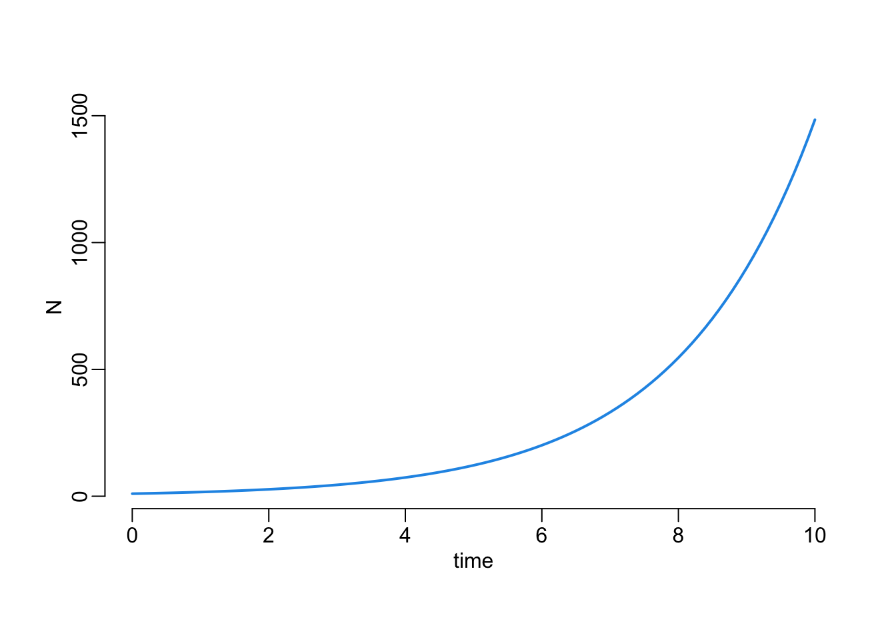
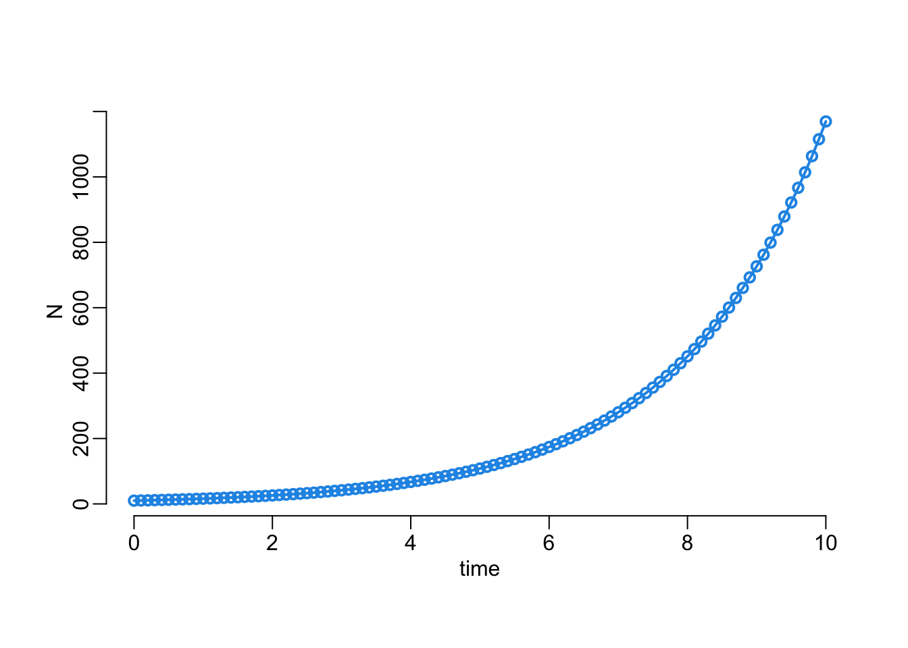
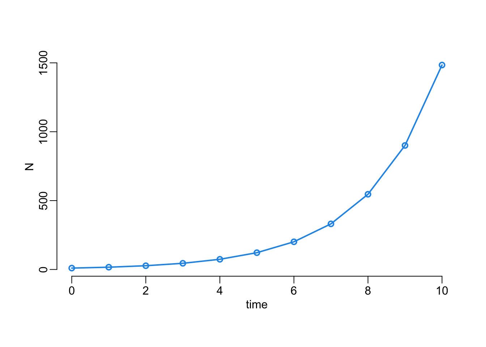
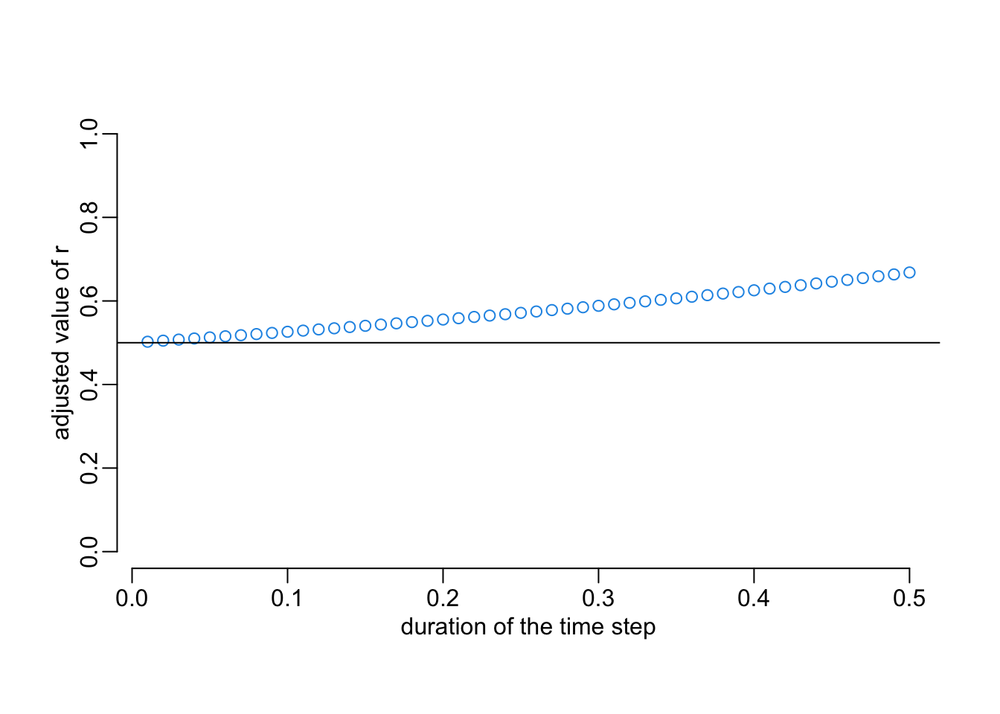
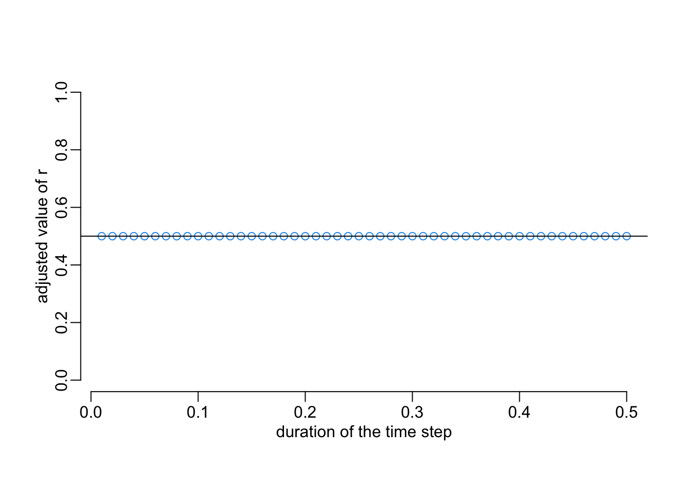

library(deSolve)
library(purrr)
library(parallel)Untitled
Packages
Functions
plot2 <- function(...) plot(..., lwd = 2, col = 4)remove_first <- function(x) tail(x, -1)last <- function(x) tail(x, 1)lines2 <- function(...) lines(..., lwd = 2)mclapply2 <- function(...) mclapply(..., mc.cores = detectCores() - 1)Exponential growth
A continuous-time model of an exponential growth:
continuous_exponential_growth <- function(N0, r, times) {
tibble::as_tibble(
as.data.frame(
ode(c(N = N0),
times,
function(time, variables, parameters) {
with(as.list(c(variables, parameters)), {
dN <- r * N
list(dN)
})
},
c(r = r))
)
)
}Here is an example use:
continuous_exponential_growth(10, .5, seq(0, 10, .1)) |>
with(plot2(time, N, type = "l"))
A discrete-time version of this model:
discrete_exponential_growth <- function(N0, r, times) {
step <- mean(diff(times))
N <- N0
for (i in remove_first(times)) {
N <- c(N, last(N) * (2 - exp(- r * step)))
}
tibble::tibble(time = times, N = N)
}Where the probability per time step is computed as
\[ p = 1 - e^{-r \Delta t} \]
with \(r\) the rate and \(\Delta t\) the duration of the time step, both expressed in the same time unit. And here an example use:
discrete_exponential_growth(10, .5, seq(0, 10, .1)) |>
with(plot2(time, N, type = "o"))
A function to compare the dynamics of the discrete-time and continuous-time models:
compare_dynamics <- function(N0, rc, rd, tmin, tmax, length, step) {
out <- continuous_exponential_growth(N0, rc, seq(tmin, tmax, le = length))
with(out, plot2(time, N, type = "n"))
step |>
walk(~ discrete_exponential_growth(N0, rd, seq(tmin, tmax, .x)) |>
with(lines2(time, N, type = "o", col = 2)))
with(out, lines2(time, N, col = 4))
}And it gives:
compare_dynamics(N0 = 10, rc = .5, rd = .5, tmin = 0, tmax = 10, length = 512,
step = c(.01, seq(.1, .5, .1)))
meaning that the larger the time step, the slower the dynamics of the discrete-time version is compared to the continuous-time version. Let’s now explore how the \(r\) parameter should be adjusted for the discrete-time model so that it produces the same dynamics as the continuous-time model. Let’s for that consider the following minus log likelihood function:
mLL <- function(rd, rc, N0, times) {
- sum(dpois(round(unlist(discrete_exponential_growth(N0, rd, times)[-1, 2])),
unlist(continuous_exponential_growth(N0, rc, times)[-1, 2]), TRUE))
}Let’s try it:
mLL(rd = .5, rc = .5, N0 = 10, times = seq(0, 10, .1))[1] 844.2607The following function uses the previous one in order to compute the adjusted \(r\) parameter for the discrete-time model:
r_discrete <- function(rd, rc, N0, step) {
optimize(mLL, rd, rc = rc, N0 = N0, times = seq(0, 10, step))$minimum
}Let’s try it:
r_discrete(c(.0001, 100), .5, 10, .1)[1] 0.5262163Let’s now compute the adjusted value of the \(r\) parameter of the discrete-time model for various values of time steps:
step_size <- seq(.01, .5, .01)
out <- step_size |>
mclapply2(r_discrete, rd = c(.0001, 100), rc = .5, N0 = 10) |>
unlist() |>
matrix(ncol = 1, byrow = TRUE) |>
as.data.frame() |>
setNames("r") %>%
cbind(step_size, .) |>
tibble::as_tibble()
with(out, plot(step_size, r, col = 4, ylim = 0:1,
xlab = "duration of the time step", ylab = "adjusted value of r"))
abline(h = .5)
We can verify that these adjusted values of \(r\) work OK:
opar <- par(mfrow = c(10, 5), plt = c(.15, .85, .15, .85))
walk2(out$r, out$step_size,
~ compare_dynamics(N0 = 10, rc = .5, rd = .x, tmin = 0, tmax = 10, length = 512,
step = .y))
par(opar)Let’s now try to model the adjusted value of the \(r\) parameter as a function of the duration of the time step:
mod <- lm(I(r - .5) ~ step_size - 1, out)
with(out, plot(step_size, r, col = 4, ylim = 0:1,
xlab = "duration of the time step", ylab = "adjusted value of r"))
(slope <- coef(mod))step_size
0.3107032 xs <- seq(0, .5, le = 512)
abline(.5, slope, col = 2, lwd = 2)
abline(h = .5)